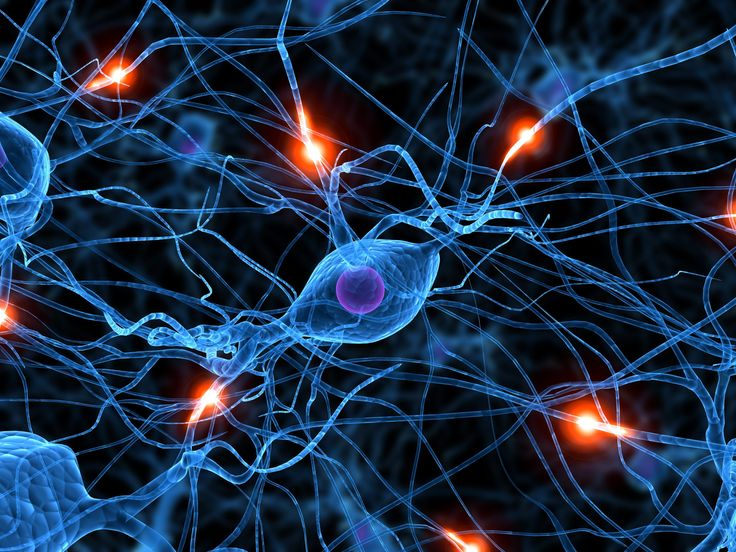

tipos de ramas del mundo cuantico
el papel de un observador
Observar en el mundo cuántico no significa solo mirar, sino interactuar. Cada medición altera el sistema y obliga a la realidad a definirse. Antes de ser observada, una partícula no elige un camino; después, elige uno solo. Esto sugiere que la realidad no es completamente independiente del acto de observarla, sino que se construye en ese mismo momento.
estrella de neutrones: el equilibrio imposible
estrella de neutrones nace cuando una estrella gigante muere de forma violenta y su núcleo colapsa bajo su propia gravedad. En ese instante, la materia es aplastada hasta un límite extremo: los electrones y protones se fusionan y todo se transforma en neutrones. El resultado es un objeto diminuto pero monstruosamente denso, donde una masa mayor que la del Sol queda encerrada en una esfera de pocos kilómetros. En ese corazón aplastado, los neutrones no solo existen, resisten. Gracias a leyes cuánticas, se niegan a ocupar el mismo estado y generan una presión capaz de frenar a la gravedad más brutal. Esa resistencia es lo único que evita que la estrella desaparezca en un agujero negro. Una estrella de neutrones es, en esencia, un equilibrio imposible entre destrucción total y supervivencia cuántica.
| las leyes de la fisica cuantica | Descripción |
|---|---|
| Superposición | En el mundo cuántico, una partícula no elige un solo estado, existe en muchos al mismo tiempo. No está aquí o allá, está en todas las posibilidades posibles hasta que ocurre una interacción. La realidad no se decide de inmediato, permanece abierta, como si el universo dudara antes de responder. |
| Entrelazamiento Cuántico | Cuando dos partículas se entrelazan, sus destinos quedan vinculados sin importar la distancia que las separa. Un cambio en una afecta instantáneamente a la otra, como si compartieran un secreto que desafía el espacio y el tiempo. Este fenómeno sugiere que la realidad cuántica está tejida con conexiones invisibles. |
| Principio de Incertidumbre | No es posible conocer con precisión tanto la posición como la velocidad de una partícula al mismo tiempo. Cuanto más sabemos de una, menos sabemos de la otra. Esta limitación no es por falta de tecnología, sino una característica fundamental del mundo cuántico, que nos recuerda que la realidad tiene un grado inherente de incertidumbre. |
Conclusión: el mundo cuántico y nuestra comprensión de la realidad
El mundo cuántico desafía nuestras intuiciones y nos invita a reconsiderar la naturaleza misma de la realidad. Nos muestra que el universo es más extraño y fascinante de lo que jamás imaginamos, y que nuestras percepciones son solo una parte de un todo mucho más complejo y misterioso. Al explorar el mundo cuántico, no solo ampliamos nuestro conocimiento científico, sino que también nos enfrentamos a preguntas profundas sobre la existencia, la conciencia y el papel del observador en la construcción de la realidad.